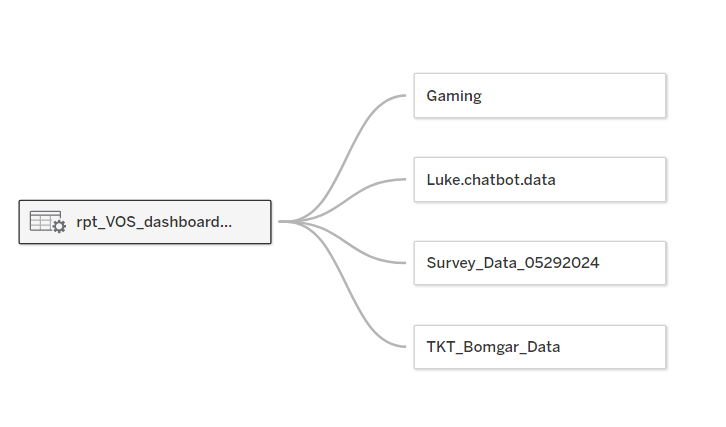
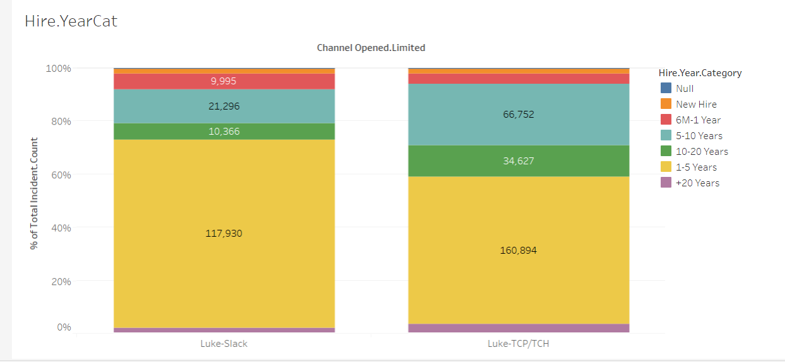
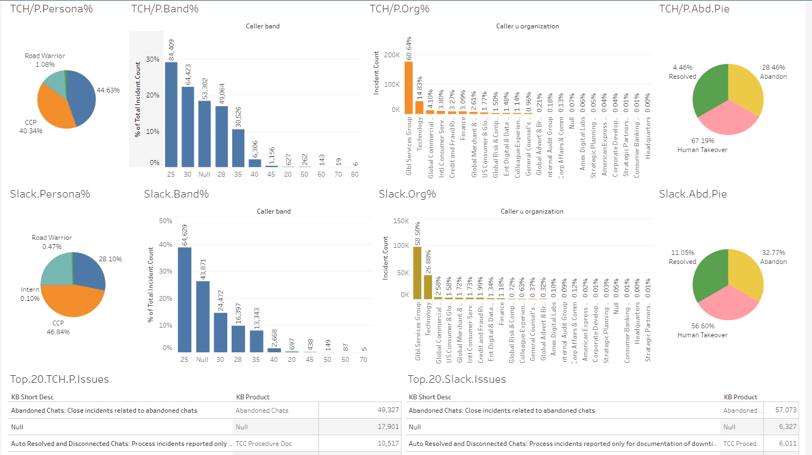
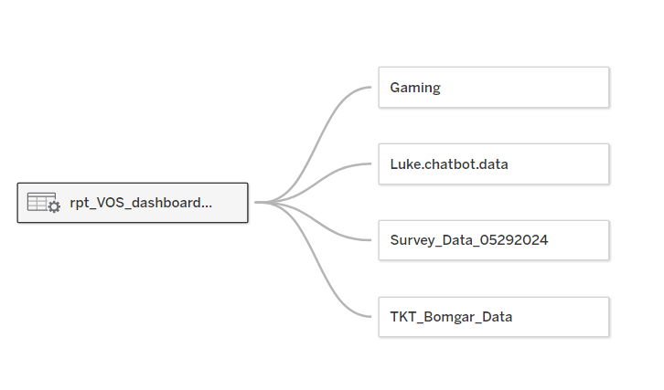
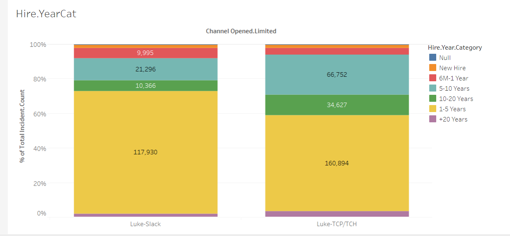
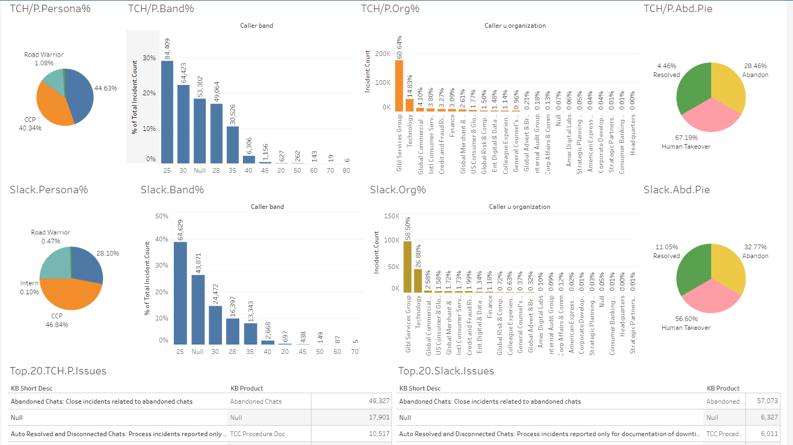
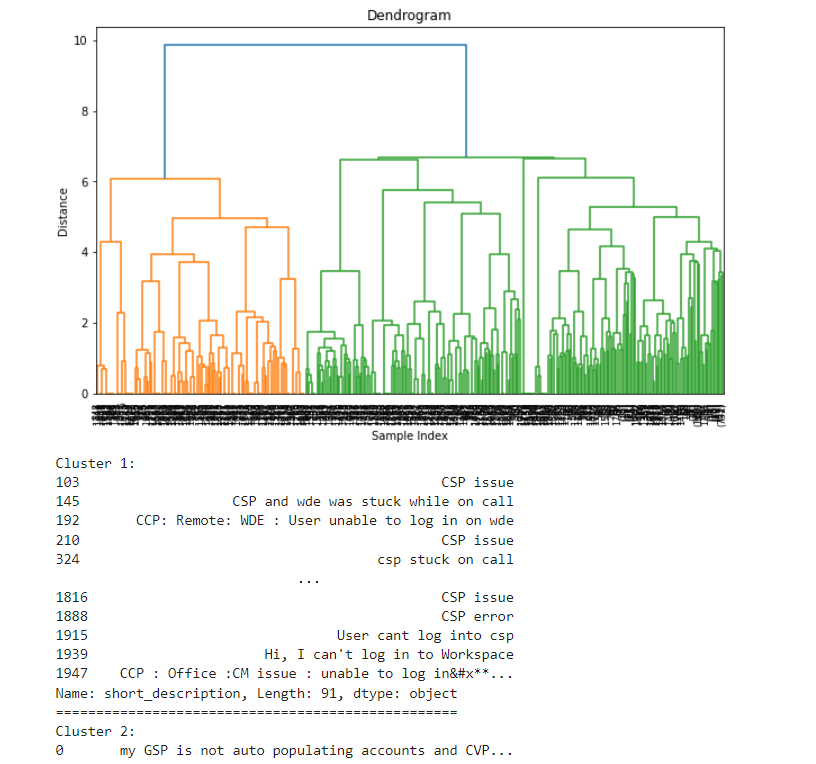
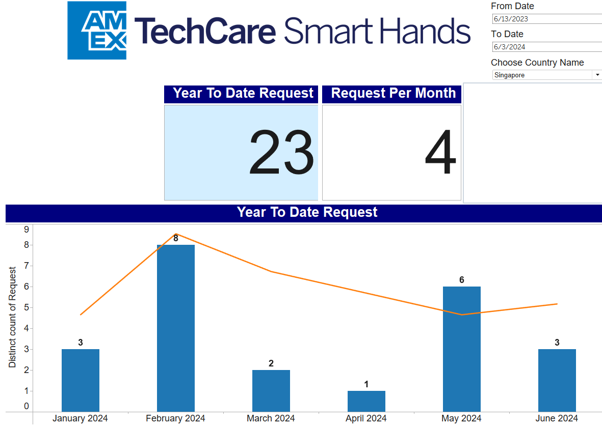

Slack vs Tech Care Hub Usage Analysis
This project integrated chatbot logs, user demographics, survey feedback, and chat duration metrics to understand user behavior across platforms.
  This site reflects my internal case studies from American Express, showcasing analytics solutions across chatbot behavior, Smart Hand support, and user engagement insights.
This project integrated chatbot logs, user demographics, survey feedback, and chat duration metrics to understand user behavior across platforms.
  Using TF-IDF and LDA, I performed topic extraction from user prompts. Clustering was visualized using a dendrogram for insights into conversation themes.
This Python function helped categorize chats into continued interaction, unwillingness to self-serve, or gaming behavior.
def categorize_chat(row):
chats = str(row['Chats']).lower()
user_input_sentences = [s.strip() for s in chats.split('User:') if s.strip()]
first_user_part = ' '.join(user_input_sentences[0].split()[:35]) if user_input_sentences else ''
create_count = first_user_part.count('create')
ticket_count = first_user_part.count('ticket')
engineer_counts = sum(first_user_part.count(w) for w in ['connect to engineer', 'engineer', 'agent', 'representative'])
if 'Resolved' in row['End Result']:
return '01-Ngaming-Userb.will.to.Self.serve'
if 'Human Takeover' in row['End Result'] or 'Abandon' in row['End Result']:
return 'Unwilling or Gaming'Created ServiceNow integrations and Tableau dashboards to track volume, timing, and assignment group metrics per country and category.
